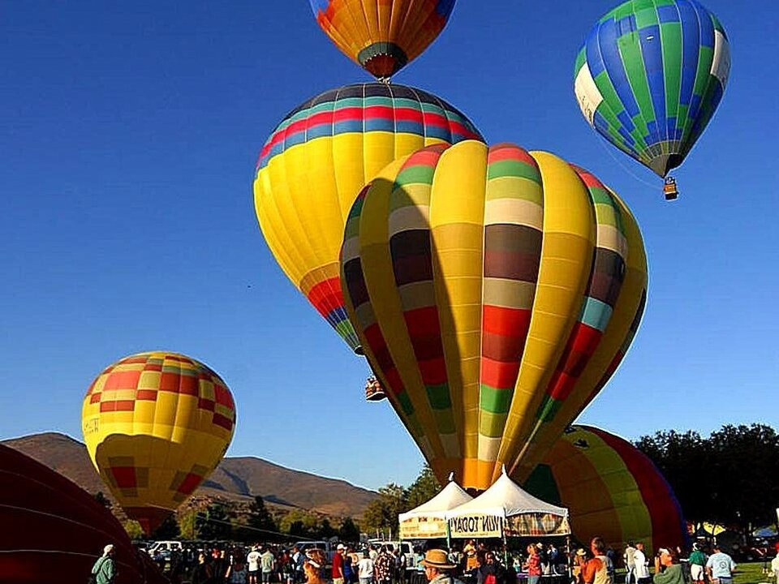

Wine country · Resort & spa
South Coast Winery Resort & Spa
Villas among the vines with a spa.
Official details for South Coast Winery Resort & SpaWine, balloons and an Old West town.
Temecula Valley is Southern California’s wine country, with more than 40 wineries spread over rolling hills between San Diego and Los Angeles. Land at French Valley, stay at a winery resort such as South Coast or Carter Estate, taste along Rancho California Road, take a sunrise balloon ride over the vineyards, and spend an evening in Old Town Temecula’s restaurants and saloons.

Time illustration: direct distance at 150 KTAS plus 15 minutes for departure and arrival, matching the discovery page. Use ForeFlight for your actual flight plan.
F70, French Valley Airport, is a non-towered county airport at 1,350 feet with a 6,000-foot runway, about 15 minutes from the wineries.
French Valley Airport, Murrieta, CA
Noise-sensitive areas all around; climb to pattern altitude before leaving the pattern. Calm-wind runway is 18. Under busy Southern California airspace; clearances through March (Riverside) Approach. No live fuel price is shown.
Southern California flying: coastal marine layer and low ceilings on many mornings (especially May to July), Santa Ana winds and turbulence in fall, busy Los Angeles airspace, and mountains between the coast and the desert. About 1900 nm from Myrtle Beach: two long days each way with several fuel stops. Plan a week, or overnight on the way out and back.
Rates and availability need travel dates. Weekends book early.
Villas among the vines with a spa.
Official details for South Coast Winery Resort & SpaBungalows at a sparkling-wine estate.
Official details for Carter Estate Winery & ResortAn inn and restaurant at Ponte Winery.
Official details for Ponte WineryPrices and availability for your dates, through our partner Stay22. This is an affiliate link: we may earn a commission at no cost to you. The picks above are never paid.
Reserve weekend dinners.
Wood-fired pizza and local wine in Old Town.
Official details for The Goat and VineA farm-to-table café and market in Old Town.
Official details for EAT MarketplaceDinner among the vines.
Official details for Ponte Winery restaurantBook balloon flights for calm early mornings.
This prototype links to the local visitor site. It does not yet match events to your travel dates.
Balloons, wine and music.
Balloon & Wine Festival for Temecula Valley Balloon & Wine FestivalCrush season.
Temecula Valley Winegrowers for HarvestMild weather.
Temecula Valley Winegrowers for Wine tastingCheck the local calendar when choosing a weekend, and confirm dates and tickets with the organizer.
A sample Temecula weekend. This is a two-day flight each way; plan a week. No bookings or availability confirmed.
Land at F70 mid-morning.
Lunch in town.
A short walk, then back to the airport.
Land at F70, subject to weather, density altitude and your actual flight plan.
Check in at a winery resort.
Dinner at The Goat and Vine.
A sunrise balloon ride.
Wine tasting.
Dinner at the resort.
Brunch at EAT Marketplace.
Compute takeoff performance and allow time at the FBO.
Afternoon winds and bumps build; leave in the morning.
The main sight.
Explore.
Dinner in town.
These details make the difference between an appealing list and a usable getaway.
Resort, then balloon and tastings.
About 1,900 nm from Myrtle Beach: two long days each way.
Brief the Southern California airspace.
March to June and September to November.
Picks and links reviewed by WingAway Weekends. Hours, prices, menus and availability change often, so confirm directly with each place before booking. Spotted something out of date, or have a favorite we missed? Email us at hello@wingawayweekends.com.
WingAway Weekends helps you discover the destination. Use ForeFlight and current official aviation information for route, performance, weather, NOTAMs and preflight decisions. Flight planning and PIC responsibility stay with the pilot.
One fly-in weekend, a Fly to Lunch pick and the newest guides, about once a month.
Free. Unsubscribe anytime.